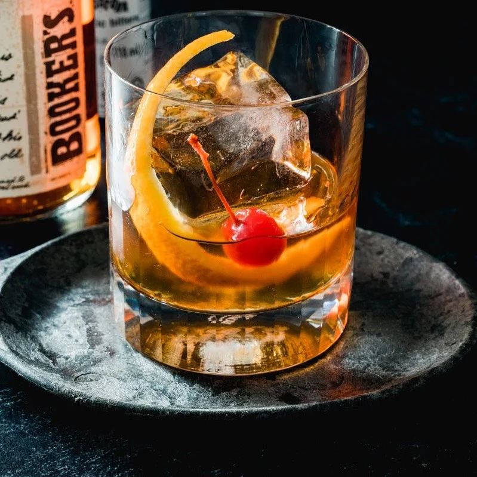

Home
Old Fashioned

Description
The old fashioned is a cocktail made by muddling sugar with bitters and water, adding whiskey (typically rye or bourbon), and garnishing with orange twist or zest and a cocktail cherry. It is traditionally served in an old fashioned glass (also known as rocks glass), which predated the cocktail.
Ingredients
- 2 teaspoons simple syrup
- 1 teaspoon water
- 2 dashes bitters
- 1 cup ice cubes
- 45ml bourbon whiskey
- 1 slice orange
- 1 cherry
Instructions
- Pour simple syrup, water and bitters into whiskey glass.
- Stir to combine.
- Place ice cubes in glass.
- Pour bourbon over ice.
- Garnish with the cherry and orange slice.